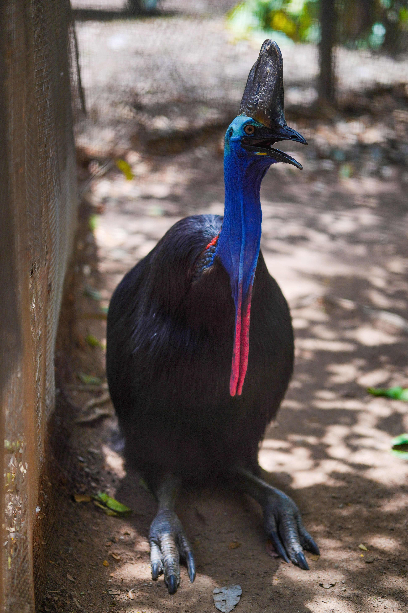

The Southern Cassowary is a huge, flightless rainforest bird and one of Australia's most distinctive birds. Adults have glossy black, hair-like feathers, a tall helmet-like casque, blue skin on the head and neck, and bright red wattles. Females are generally larger and more brightly coloured than males. The species is mainly solitary and spends much of its time moving quietly through dense rainforest in search of fallen fruit. It plays an important ecological role because it disperses the seeds of many rainforest plants. Unlike most birds, the female lays the eggs and then leaves the male to incubate them and raise the chicks. Its powerful legs and large inner claws make it a bird that is best admired from a respectful distance.